商务智能PPT
数据仓库
主要技术
- 数据提取、转换和装载（extract, translation and load，ETL）
- 数据管理
- 数据访问
- 元数据
- 元数据是关于数据的数据，是如何管理数据仓库的重要数据。
- 描述了数据的结构、内容、编码、索引等内容
- 表名，系统名，索引，数据结构，编码，ID
分析和展现层
- 报表和查询
- 联机分析处理（OLAP）
- 数据统计
- 数据挖掘
操作型/分析型数据
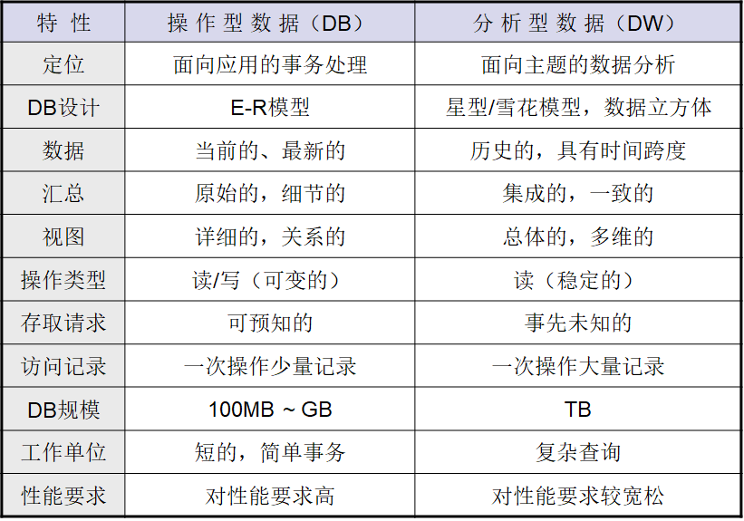
特征
- 面向主题
- 集成
- 非易失（稳定的）
- 时变的（随时间不断变化）
数据刷新
- 时间戳
- DELTA文件
- 建立映象文件
- 日志文件
数据周期
指从操作型环境中的数据发生变化起，到这个变化反映到数据仓库中所用到的时间。通常，数据周期应该不低于24个小时
原子层
数据仓库的基础, 上层分析型应用的数据来源，所有战略分析型数据的基础。
特点
- 原子层保持历史集成性
- 原子层拥有数据仓库的最低细节（粒度）数据
- 原子层的构建是迭代的
- 原子层的数据结构是面向企业的
- 原子层可以是集成的
- 原子层是静态的
粒度
对数据仓库中的数据的综合程度的一个度量
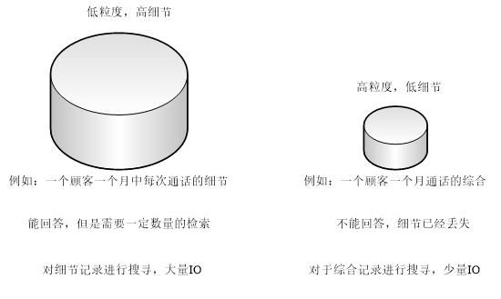
数据组织形式
简单堆积文件
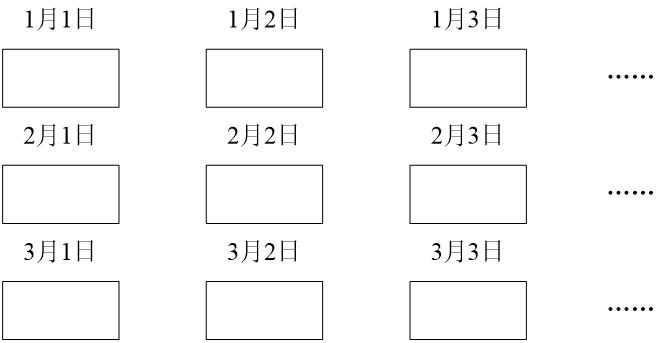
轮转综合文件
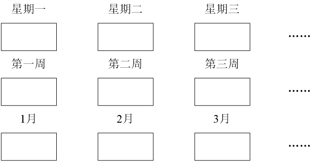
简化直接文件
- 类似简单堆积文件，间隔一定时间的数据库快照
连续文件
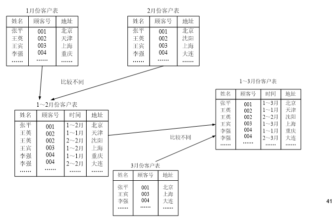
数据集市
数据集市的数据来自数据仓库，它是数据仓库中数据的一个部分与局部，是一个数据的再抽取与组织的过程
特点
- 面向主题
- 存储了预聚集数据
- 特定分析需求或用户群快速获取信息
- 体现终端用户的观点，面向数据仓库的界面
- 多层次、多维度
自顶向下的结构
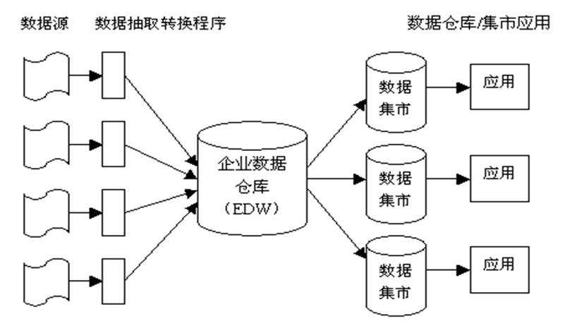
优点
- 建立数据集市能够减轻DW访问负载
- 各部门可以任意处理数据
- 数据转换和整合在DW阶段统一完成
- 具备数据缓冲功能
缺点
成本高、见效慢、数据集市间不共享资源
自底向上的结构
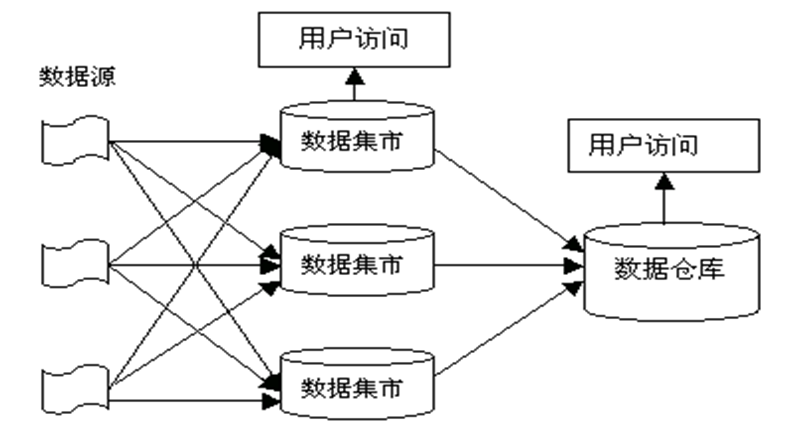
优点
见效快、启动资金少
缺点
- 各个部门都要进行数据清理整合
- 可能造成“蜘蛛网”、数据不一致等问题
- 并且总体上没有节约资金
总线结构
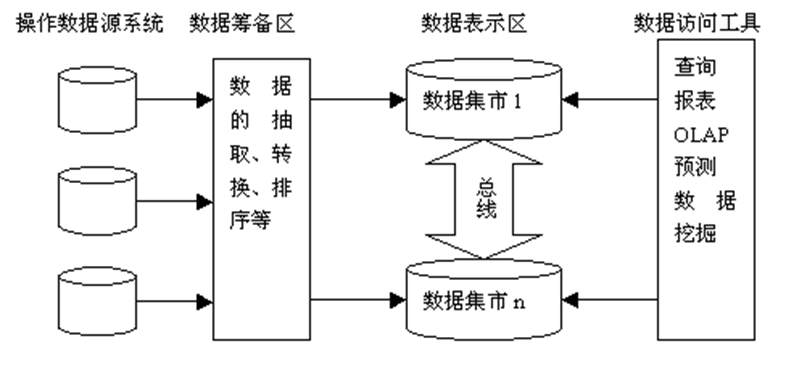
优点
共享维表和事实表，解决了建立数据集市的许多问题
缺点
- 这种结构基于多维模型，应用限制于OLAP
- 多个数据源直接影响多个集市，造成数据仓库结构不十分稳定
OLAP
基本概念
度量值
度量值是最终用户浏览多维数据集时重点查看的数值型数据
维
观察度量值的角度
层
反映了对度量值的观察深度
维成员
维的一个取值
数据构造方式
ROLAP： （Relational OLAP）
- 用传统的“关系数据库管理系统”（RDBMS）管理，将星型（雪花型）模式用二维表形式存储，表间用关键字相连，从而构成一个关系模式，它称为ROLAP
- 用户在ROLAP上的查询操作将被改写成RDBMS中的查询操作并执行获得查询结果
MOLAP：（Multi-Dimensional OLAP）
- 用“多维数据库管理系统”管理，多维数据库采用的基本数据模式就是“多维数组”。
- 在MOLAP中，“事实表”被表示成一个“多维数组”，“维”的属性值被映射成“多维数组”的下标，而“度量值”（包括综合数据）则作为多维数组的取值存储在数据单元中。在查询时，可以通过下标的取值来找到相应多维数组中的“度量值”
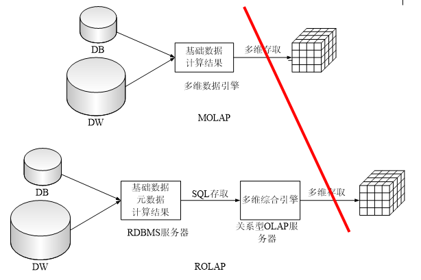
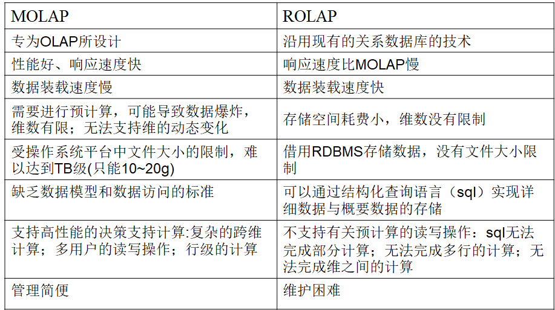
混合联机分析处理（HOLAP）
- 试图将 MOLAP 和ROLAP进行融合
- 从而在大量数据上获得高效率
- 方式
- 同时提供多维数据库（MDDB）和关系数据库（RDB）
- 将 RDB的查询结果存储到 MDDB
- 使用MDDB存储高层次数据，RDB存储细节数据
多维数据分析
对以多维形式组织起来的数据采取切片、切块、旋转、钻取等各种分析动作，以求剖析数据，使最终用户能从多个角度、多个侧面地观察数据，从而深入地了解被包含在数据中的信息、内涵。
基本操作
切片（Slice）
- 根据某一维上的某个维成员值选择统计数据进行分析
切块（Dice）
根据某一维上的某个维成员取值的区间选择统计数据进行分析
根据多个维度上的维成员取值的区间选择统计数据进行分析
旋转（Pivot/Rotate）
- 调整维的排列次序的动作称为旋转
上钻/数据概括（roll_up）
- 将多维下标的取值提升到较高的概念层次上，从而形成新的统计查询结果，并进行分析。
下钻/数据细化（drill_down）
- 将多维下标的取值降低到较低的概念层次上，从而形成更细致的统计查询结果，并进行分析。
跨钻（drill across）
- 对多个事实进行操作
钻透（drill through）
- 下钻至数据立方体的最低细节后，继续细化至数据仓库/数据库的关系型表格
数据仓库设计
设计原则
- 面向主题原则
- 数据驱动原则
- 原型法设计原则
设计步骤
- 系统规划
- 明确主题
- 技术准备
- 概念设计
- 逻辑设计
- 物理设计
- 数据仓库生成
- 数据仓库的运行与维护
多维建模
事实表
- 维度建模的核心和基本表
- 每一事实表都对应着一个或若干个“度量值”
- 度量值是事实表的核心，也是趋势分析的对象
- 通过事实表来记录维度值与度量值之间的关系
- 事实表中的一行对应一个度量值
- 事实表中的所有度量值必须具有相同的粒度
- 粒度划分模型：事务，周期快照，累积快照
维度表
- 维度表是事实表的入口，为用户提供了使用数据仓库的接口。
- 维度表中的维度属性通常用于定义事实表上的查询条件，也可作为定义报表和统计查询的 “列”。
- 维度表的定义通常包括
- 尽可能多的列
- 相对少的行（相对于事实表）
商务智能往年试卷
非事实型事实表
非事实型事实表中，通常会保存十个左右的维度外键和多个度量事实，度量事实是事实表的关键所在。在非事实型事实表中没有这些度量事实，只有多个维度外键。非事实型事实表通常用来跟踪一些事件或者说明某些活动的范围。
数据刷新
时间戳
适用情况
若数据库中的记录有时间属性，则可根据OLTP数据库中的数据有无更新，以及在执行更新操作时数据的修改时间标志来实现数据仓库中数据的动态刷新。
缺点
大多数数据库系统中的数据并不含有时间属性。
DELTA文件
适用情况
有些基于OLTP数据库的操作型应用程序在工作过程中会形成一些DELTA文件以记录该应用所作的数据修改操作，可根据该DELTA文件进行数据刷新。
优点
采用此方法可避免对整个数据库的对比扫描，具有较高的刷新效率。
缺点
这样的应用程序并不普遍，修改现有的应用程序的工作量又太大。
建立映象文件
实现方法
- 在上一次数据刷新后对数据库作一次快照
- 在本次刷新之前再对数据库作一次快照
- 比较两个快照的不同，从而确定数据仓库的数据刷新操作
优点
对于数据库和操作型应用无特别要求
缺点
需要占用大量的系统资源
可能较大地影响原有数据库系统的性能
日志文件
实现方法
一般来说，现代OLTP数据库都有日志文件，可根据OLTP数据库的日志信息来实现数据仓库的数据刷新。
优点
- 日志是OLTP数据库的固有机制
- 不会影响原有OLTP数据库的性能
- 具有比DELTA文件和建立映象文件更高的刷新效率
缺点
无法应用于无日志文件机制的遗留数据库系统等
快照
数据仓库内部以一种称之为“快照”的数据结构为中心来组织。数据仓库中的数据记录是某一时刻生成的快照，包含多种数据类型，通常包括：
关键字，标志快照的关键字
时间，标志事件发生的时间单元
非关键字的主要数据，与关键字相关连的主要非关键字数据
二级数据。在形成快照时偶然捕获并被置入快照中的数据
OLAP
ROLAP： （Relational OLAP）
- 用传统的“关系数据库管理系统”（RDBMS）管理，将星型（雪花型）模式用二维表形式存储，表间用关键字相连，从而构成一个关系模式，它称为ROLAP
- 用户在ROLAP上的查询操作将被改写成RDBMS中的查询操作并执行获得查询结果
优势
可以处理大数据量
可以利用关系型数据库所固有的功能
劣势
- 性能可能会很慢
- 受限于SQL的功能
MOLAP：（Multi-Dimensional OLAP）
- 用“多维数据库管理系统”管理，多维数据库采用的基本数据模式就是“多维数组”。
- 在MOLAP中，“事实表”被表示成一个“多维数组”，“维”的属性值被映射成“多维数组”的下标，而“度量值”（包括综合数据）则作为多维数组的取值存储在数据单元中。在查询时，可以通过下标的取值来找到相应多维数组中的“度量值”
优势
卓越的性能
可以执行复杂的计算
劣势
- 它可以处理的数据量有限
- 需要额外的成本
混合联机分析处理（HOLAP）
- 试图将 MOLAP 和ROLAP进行融合
- 从而在大量数据上获得高效率
- 方式
- 同时提供多维数据库（MDDB）和关系数据库（RDB）
- 将 RDB的查询结果存储到 MDDB
- 使用MDDB存储高层次数据，RDB存储细节数据
| 名称 | 描述 | 细节数据存储位置 | 聚合后的数据存储位置 |
|---|---|---|---|
| ROLAP(Relational OLAP) | 基于关系数据库的OLAP实现 | 关系型数据库 | 关系型数据库 |
| MOLAP(Multidimensional OLAP) | 基于多维数据组织的OLAP实现 | 数据立方体 | 数据立方体 |
| HOLAP(Hybrid OLAP) | 基于混合数据组织的OLAP实现 | 关系型数据库 | 数据立方体 |
什么是数据仓库，其四大特色是什么？
数据仓库是一个面向主题的、集成的、时变的、非易失的数据集合，用于支持经营管理过程中的决策制定。
四大特色
面向主题：面向主题是指数据仓库内的信息是按主题进行组织的，为按主题进行决策的过程提供信息。
集成：数据仓库中的数据是为分析服务的，分析需要多种广泛的不同数据源以便进行比较、鉴别，因此数据仓库中的数据必须从多个数据源中获取，这些数据源包括多种类型数据库、文件系统以及Internet网上数据等，它们通过数据集成而形成数据仓库中的数据。
非易失：数据仓库中的数据是经过抽取而形成的分析型数据，不具有原始性，主要供企业决策分析之用，执行的主要是“查询”操作，一般情况下不执行“更新”操作。同时，一个稳定的数据环境也有利于数据分析操作和决策的制订。
时变：数据仓库内的信息并不只是关于企业当时或者某一时点的信息，而是系统记录了企业从过去某一时点到目前的各个阶段的信息，通过这些信息可以对企业的发展历程和未来趋势做出定量分析和预测。因此数据仓库中的数据通常都带有时间属性，同时必须以一定时间段为单位进行统一更新。
为什么在传统的以数据库为核心的事务处理环境中不适宜建立DSS等分析型应用？
事务处理和分析处理的性能特性不同：用户每次操作处理的时间短，存取数据量小，但是操作频率高，并发程度大。每次分析可能需要连续运行很长的时间，存取数据量大，但是很少做这样的分析处理，也没有并发执行的要求。
数据集成问题：事务处理一般只需要与本部门业务有关的当前细节数据，分析处理的数据可能来自多种不同的数据源，对于需要集成数据的DSS应用来说，在应用程序中对事务处理环境中的这些纷繁复杂的数据进行集成将带来下述问题：大大加重程序员的负担，重复计算，极低的分析处理效率。
数据的动态集成问题：集成数据必须以一定的周期进行刷新，但传统的事务处理环境并不具备动态集成的能力。
历史数据问题：事务处理一般只需要当前数据，分析处理更看重历史数据。
数据的综合问题：事务处理需要的是当前的细节性操作数据，而分析处理需要的往往是大量的总结性分析型数据，而非数据库中的细节性操作数据。在分析前往往需要对细节数据进行不同程度的综合，传统的事务处理系统不具备这种综合能力。
数据的访问问题：事务处理对于需要修改的数据必须实时更新数据库，分析处理不需要实时更新操作，但需要定时刷新。
什么是数据仓库中的粒度？为何在数据仓库中需要采用多重粒度？试举例说明。
粒度是对数据仓库中的数据的综合程度的一个度量，既影响数据仓库中数据量的多少，也影响数据仓库能够回答询问的种类。
原因
应对不同级别的粒度要求，大粒度数据，快速存储设备，提高性能；小粒度数据，低速存储设备，满足细节查询。
数据仓库的物理模型设计优化技术有哪些？对这些技术进行简要的说明。
合并表：为了节省I/O开销，可以把这些表中的记录混合存放在一起，以减低表的连接操作的代价。
建立数据序列：创建一个数据序列，将数据存放在一行中，一次I/O就足以检索到。
引入冗余：在面向某个主题的分析过程中，通常需要访问不同表中的属性，而每个属性又可能参与到多个不同主题的分析过程。因此可以通过修改关系模式把某些属性复制到多个不同的主题表中去，从而减少一次分析过程需要访问的表的数量。
表的物理分割：可以根据表的每个属性数据的访问频率和稳定性程度对表的存储结构进行分割。
生成导出数据：在原始、细节数据的基础上进行一些统计和计算，生成导出数据，并保存在数据仓库中。
建立广义索引：用于记录数据仓库中数据与“最”有关的统计结果的索引被称为“广义索引”。用户可以从已经建立的广义索引里直接获取这些统计信息，而不必对整个数据仓库进行扫描。
什么是数据仓库中的历史完整性/⼀致性？为保持历史完整性/⼀致性，可以采用哪些方式？试举例说明。
历史完整性：部分维度属性是会随时间而发⽣变化的，若只是将这些变化的维度属性值作简单的修正，即在维度表中只保留该维度属性的当前值，这会直接影响到对事实表中该维度属性所对应的事实数据元组的访问，特别是无法根据维度属性值的变化情况来进行分析处理。保证维度中的历史数据在改变之后不丢失。
方法：针对渐变维度
- 改写属性值：容易实现，但不能对旧属性值的任何历史数据进行维护（无法保证历史⼀致性）
- 添加维度行：准确跟踪渐变属性的主要⽅法；引⼊新的引用来反映新的属性值；增加了维度行的膨胀；可以引⼊生效或截止日期
- 添加维度列：使用维度列保存旧的属性值；不适合跟踪维度属性大量变化
给出一个具体的数据立方体模型的例子
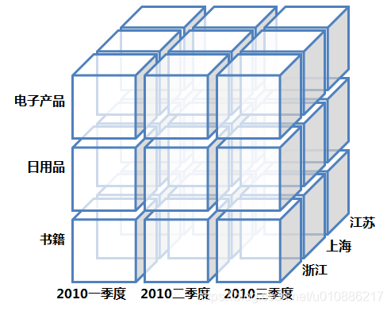
以该数据立方体为例介绍OLAP中的维和层
维（Dimension）：是人们观察数据的特定角度，是考虑问题时的一类属性，属性集合构成一个维（时间维、地理维等）。
维的层次（Level）：人们观察数据的某个特定角度（即某个维）还可以存在细节程度不同的各个描述方面（时间维：日期、月份、季度、年）。
以该数据立方体的某一维为例，举例说明什么是切片（slice）、切块（dice）、数据概括（roll-up）和数据细化（drill-down）操作
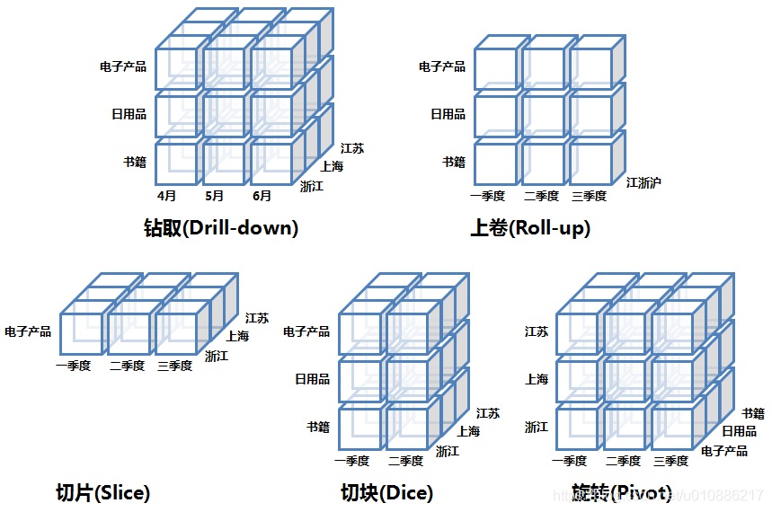
下钻（Drill-down）：在维的不同层次间的变化，从上层降到下一层，或者说是将汇总数据拆分到更细节的数据，比如通过对2010年第二季度的总销售数据进行钻取来查看2010年第二季度4、5、6每个月的消费数据，如上图；当然也可以钻取浙江省来查看杭州市、宁波市、温州市……这些城市的销售数据。
上卷（Roll-up）：钻取的逆操作，即从细粒度数据向高层的聚合，如将江苏省、上海市和浙江省的销售数据进行汇总来查看江浙沪地区的销售数据，如上图。
切片（Slice）：选择维中特定的值进行分析，比如只选择电子产品的销售数据，或者2010年第二季度的数据。
切块（Dice）：选择维中特定区间的数据或者某批特定值进行分析，比如选择2010年第一季度到2010年第二季度的销售数据，或者是电子产品和日用品的销售数据。
旋转（Pivot）：即维的位置的互换，就像是二维表的行列转换，如图中通过旋转实现产品维和地域维的互换。
交易事实表、周期快照事实表和累积快照事实表
事务事实表
记录的事务层面的事实，保存的是最原子的数据，也称“原子事实表”。事务事实表中的数据在事务事件发生后产生，数据的粒度通常是每个事务一条记录。一旦事务被提交，事实表数据被插入，数据就不再进行更改，其更新方式为增量更新。
周期快照事实表
周期快照事实表以具有规律性的、可预见的时间间隔来记录事实，时间间隔如每天、每月、每年等等。周期快照事实表的粒度是每个时间段一条记录，通常比事务事实表的粒度要粗，是在事务事实表之上建立的聚集表。周期快照事实表的维度个数比事务事实表要少，但是记录的事实要比事务事实表多。
累积快照事实表
代表的是完全覆盖一个事务或产品的生命周期的时间跨度，它通常具有多个日期字段，用来记录整个生命周期中的关键时间点。另外，它还会有一个用于指示最后更新日期的附加日期字段。由于事实表中许多日期在首次加载时是不知道的，所以必须使用代理关键字来处理未定义的日期，而且这类事实表在数据加载完后，是可以对它进行更新的，来补充随后知道的日期信息。
| 特点 | 交易事实 | 周期快照事实 | 累积快照事实 |
|---|---|---|---|
| 时间/时期 | 时间 | 时期 | 时间跨度较短的多个时点 |
| 粒度 | 每行代表一个交易事件 | 每行代表一个时间周期 | 每行代表一个业务周期 |
| 事实表加载 | 新增 | 新增 | 新增和修改 |
| 事实表更新 | 不更新 | 不更新 | 新事件产生时更新 |
| 时间维 | 业务日期 | 时期末 | 多个业务过程的完成日期 |
| 事实 | 交易活动 | 时间周期内的绩效 | 限定多个业务阶段内的绩效 |
数据仓库中ETL技术是什么？在数据仓库架构中ETL完成什么任务？
ETL：数据抽取、数据转换、数据装载
数据抽取：数据仓库中的数据来源于数据源，将数据源中数据通过网络进行抽取，并经加⼯、转换、综合后形成数据仓库中的数据，这就是数据仓库的数据抽取。
数据转换：数据元素的重命名、格式化，数据编码的转换
数据刷新：经过抽取进入数据仓库的数据，在经过⼀段时间后要重新修正，修改那些过时的数据，保存那些不变的数据，此种动作称为数据仓库的数据刷新。
- 数据刷新的过程与抽取类似，但刷新的数据量往往小于抽取的数据量。由于仅需要对修改过的数据进行刷新，因而其实现难度与复杂性要大于数据抽取。
数据装载：数据经过转换、清洗后，需要装载到目标数据库中。数据装载的方式有多种：全表对比方式、时间戳方式、日志表的方式、全表删除后再插入的方式。
任务
辨识与主题相关的原始数据
- 有用的数据
开发数据抽取策略
- 正确和完整的数据
将原始数据转换为目标规格
将原始数据加载到预定目标区域
为何在数据仓库体系中还需要建立数据集市？
全局性数据仓库往往太大，在实际应用中将它们按部门或个⼈分别建立反映各个子主题与区域的局部性数据组织，它们即是数据集市。因此，有时我们也称它为部门数据仓库
在企业中建立数据仓库和数据集市体系的方法主要是哪四种？请分别描述这些方法，并总结其优点和缺点。
自顶向下的结构
构建企业数据仓库
公共中央数据模型；数据再加⼯；减少冗余和不⼀致性；搜集历史的、细节的、全局的数据
基于企业数据仓库构建数据集市
选定企业模型下的部门主题；聚集数据；建立集市数据对企业数据仓库的依赖关系
优点
建立数据集市能够减轻DW访问负载
各部门可以任意处理数据
数据转换和整合在DW阶段统⼀完成
数据缓冲功能
缺点
成本高、见效慢、数据集市间不共享资源
自底向上的结构
构建数据集市
划定主题区域；快速实施，本地自治；易于复制；数据再加⼯；允许⼀定的冗余和不⼀致
基于数据集市构建企业数据仓库
确定各数据集市的可用性；模型的合并；消除不同数据集市之间的数据不⼀致性
优点
见效快、启动资金少
缺点
各个部门都要进行数据清理整合
可能造成“蜘蛛网”、数据不⼀致等问题
并且总体上没有节约资金
总线结构的数据集市
不建立数据仓库而直接建立数据集市
各个数据集市不是孤立的，相互之间通过⼀种共享维表和事实表的“总线结构”紧密联系在⼀起。
优点
共享维表和事实表，解决了建立数据集市的许多问题
缺点
这种结构基于多维模型，应用限制于OLAP
多个数据源直接影响多个集市造成结构不十分稳定
企业级数据集市结构 [PPT没有]
在没有数据仓库的前提下用总线结构构建数据集市
数据集市遵循总线结构进行独立开发部署
ETL过程不存在数据结构问题